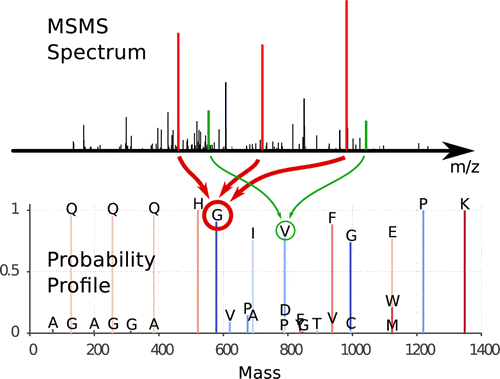

-

MS/MS Spectra Interpretation as a Statistical–Mechanics Problem
Faccin and Bruscolini
Anal. Chem., 2013, 85 (10), pp 4884–4892
-

TnovoMS
T-novoMS is a combined de-novo/database-search tool for MSMS tandem spectra identification.